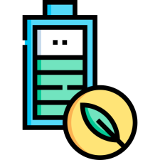
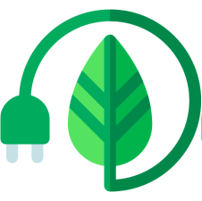

Es ist wichtig, darauf zu achten, dass Elektronikprodukte ressourcenschonend hergestellt werden. Dies beinhaltet die Verwendung nachhaltiger Materialien, die Langlebigkeit der Geräte und die Möglichkeit des einfachen Recyclings. Eine bewusste Entscheidung für energieeffiziente Geräte kann ebenfalls einen erheblichen Beitrag leisten. Green IT zielt darauf ab, Innovationen voranzutreiben, die nicht nur technologischen Fortschritt ermöglichen, sondern auch im Einklang mit ökologischen Prinzipien stehen.
Indem wir uns für nachhaltige Technologien und umweltfreundliche Praktiken in der IT entscheiden, tragen wir dazu bei, eine grüne Zukunft zu gestalten und die Auswirkungen unseres digitalen Lebens auf den Planeten zu minimieren. Jeder Einzelne kann seinen Teil dazu beitragen, indem er bewusste Entscheidungen trifft und auf grüne Alternativen setzt.
-
 $9
$9
Elektronik verantwortungsbewusst entsorgen
Recyceln Sie alte Elektronikgeräte ordnungsgemäß, um Elektronikschrott zu reduzieren.
Nutzen Sie Recyclingprogramme oder bringen Sie Elektronik zu speziellen Sammelstellen, um sicherzustellen, dass wertvolle Materialien wiederverwendet werden und schädliche Substanzen nicht in die Umwelt gelangen.
Informieren Sie sich über lokale Recyclingrichtlinien und -möglichkeiten, um sicherzustellen, dass Sie elektronische Altgeräte gemäß den Umweltstandards entsorgen. Spenden Sie noch funktionstüchtige Geräte an gemeinnützige Organisationen, um die Lebensdauer zu maximieren. Durch diese bewussten Entscheidungen tragen Sie aktiv dazu bei, Elektronikabfall zu minimieren und gleichzeitig positive Auswirkungen auf die Umwelt zu erzielen.
-
 $9
$9
Energieeffiziente Geräte nutzen
Investieren Sie in energieeffiziente Elektronikgeräte und Computer, die den Energieverbrauch minimieren.
Achten Sie auf Umweltbewertungen und Zertifizierungen, um nachhaltige Optionen zu wählen.
Reduzieren Sie den Standby-Verbrauch, indem Sie Geräte ausschalten, wenn sie nicht in Gebrauch sind. Berücksichtigen Sie außerdem die Reparaturfähigkeit von Elektronik, um die Lebensdauer zu verlängern und den Bedarf an Neugeräten zu verringern. Ein bewusster Umgang mit Technologie trägt dazu bei, die Umweltauswirkungen zu minimieren und einen nachhaltigeren Lebensstil zu fördern.
Unternehmen tragen zur Reduzierung ihres CO2-Fußabdrucks bei, indem sie auf grüne Datenzentren setzen. Diese nutzen erneuerbare Energiequellen und implementieren energieeffiziente Technologien. Darüber hinaus können Unternehmen aktiv dazu beitragen, Elektroschrott zu minimieren, indem sie Recyclingprogramme unterstützen und ihre Produkte nachhaltig gestalten.
Cloud Computing optimiert Ressourcennutzung, indem es Serverkapazitäten je nach Bedarf skaliert, was Energieeinsparungen ermöglicht. Virtualisierung in Rechenzentren ist ein weiterer Schlüsselfaktor. Sie ermöglicht es, mehrere virtuelle Server auf einer physischen Hardware zu betreiben, wodurch die Auslastung verbessert und der Energieverbrauch reduziert wird. Durch bewusste Entscheidungen in der IT-Branche können wir gemeinsam einen erheblichen Beitrag zur Förderung von Green IT und Umweltschutz leisten.
-

-

-

- 
- 
-
.svg)
-
-